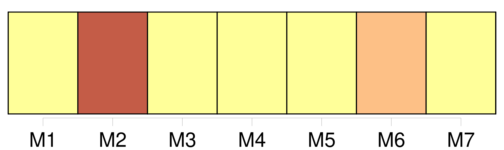
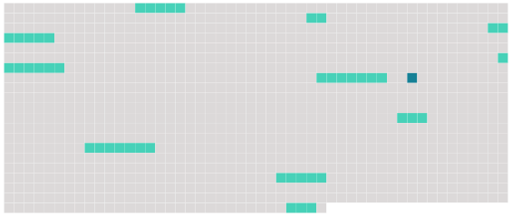

Longueur nb maillons : 10 mentions |
 |
Dans les cas où l'absent n'aurait point laissé de procuration pour [l'administration de ses biens] , ses héritiers présomptifs au jour de sa disparition ou de ses dernières nouvelles, pourront, en vertu du jugement définitif qui aura déclaré l'absence, se faire envoyer en possession provisoire des biens qui appartenaient à l'absent au jour de son départ ou de ses dernières nouvelles, à la charge de donner caution pour la sûreté de [leur administration] [3 phrases]
Il en sera de même si la procuration vient à cesser ; et, dans ce cas, il sera pourvu à [l'administration des biens de l'absent] , comme il est dit au chapitre Ier du présent titre. [3 phrases] L'époux commun en biens, s'il opte pour la continuation de la communauté, pourra empêcher l'envoi provisoire et l'exercice provisoire de tous les droits subordonnés à la condition du décès de l'absent, et prendre ou conserver par préférence [l'administration des biens de l'absent] [3 phrases]
La possession provisoire ne sera qu'un dépôt, qui donnera à ceux qui l'obtiendront [l'administration des biens de l'absent] , et [qui] les rendra comptables envers lui, en cas qu'il reparaisse ou qu'on ait de ses nouvelles. [7 phrases]
Ceux qui par suite de l'envoi provisoire, ou de [l'administration légale] , auront joui des biens de l'absent, ne seront tenus de lui rendre que le cinquième des revenus, s'il reparaît avant quinze ans révolus depuis le jour de sa disparition ; et le dixième, s'il ne reparaît qu'après les quinze ans. [4 phrases]
Si l'absence a continué pendant trente ans depuis l'envoi provisoire, ou depuis l'époque à laquelle l'époux commun aura pris [l'administration des biens de l'absent] , ou s'il s'est écoulé cent ans révolus depuis la naissance de l'absent, les cautions seront déchargées ; tous les ayant-droit pourront demander le partage des biens de l'absent, et faire prononcer l'envoi en possession définitif par le tribunal de première instance. [3 phrases]
Si l'absent reparaît ; ou si son existence est prouvée pendant l'envoi provisoire, les effets du jugement qui aura déclaré l'absence, cesseront ; sans préjudice, s'il y a lieu, des mesures conservatoires prescrites au chapitre Ier du présent titre, pour [l'administration de ses biens] [5 phrases]
Après le jugement de déclaration d'absence, toute personne qui aurait des droits à exercer contre l'absent, ne pourra les poursuivre que contre ceux qui auront été envoyés en possession des biens, ou qui en auront [l'administration légale] |
 |
Il est possible de télécharger la ressource sur la page Ortolang |
Si vous avez des questions ou vous voyez des erreurs, merci d'envoyer un mail à silvia.federzoni89@gmail.com |